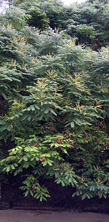
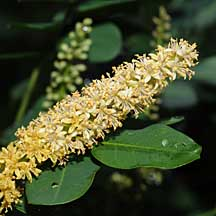
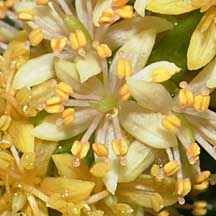
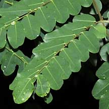
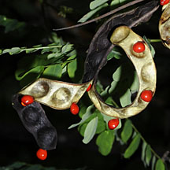
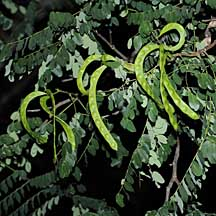

|
|
| plants text index | photo index |
| coastal plants |
| Saga
tree Adenanthera pavonina Family Fabaceae/Leguminosae updated Sep 2016 Where seen? A tree much loved by small children who cannot resist their hard, bright red seeds. It is found on some shores such as Sentosa and Berlayar Creek, as well as Sungei Buloh Wetland Reserve. It is also planted in some of our parks, but is not considered suitable for roadsides as the tree is 'susceptible to damage in strong winds and becomes untidy with age, dropping large amounts of leaf litter'. According to Corners, the tree grows wild on rocky headlands and islets. Features: A tall tree (up to 20m) with pretty leaves. 'Pavo' means peacock, and the compound leaves are quite lovely. The leaves (10-40cm long) have 2-6 pairs of side stalks, each with 9-15 pairs of leaflets. The tree sheds its leaves seasonally, turning yellow before dropping off. According to Corners, in Singapore they shed their leaves every 6-8 months, with the leafless period being very short. After the leaf-fall, flowers appear on long stalks (8-12cm) from the ends of the new shoots. These are faintly scented like orange blossoms. The petals are cream-yellow turning dull orange. The pods are long (15-20cm), curved and green, but don't coil until they begin to split whereupon they also turn blackish. The seeds are bright red, hard and heart-shaped. According to Corners, the word 'Saga' has been traced to the Arabic for goldsmith. In India and Sri Lanka, the seeds of this tee have been used as units of weight for fine measures, of gold for instance. Burkill suggests the seeds of the tree were the basis of the very earliest of such systems. Corners remarks "What more delightful counters for the primitive and bloody mind than these hard, red, heart-shaped seeds?" Human uses: Burkill says the raw seeds are considered intoxicants. There are records that in Java, the seeds are roasted, shelled and eaten with rice and said to taste like soyabeans. In India, the seeds are also used in medicine. And everywhere, the seeds are used to make necklaces. The trees are also commonly planted as shade trees, although Burkill says they are "not ideal for the purpose, becoming untidy at the time of leaf-fall". According to Burkill, the timber is used in some places for house-building and cabinet-making. The wood produces a red dye but is not widely used, although in India it is pounded into a powder and used to make caste-marks. The wood is also used in tonics while the leaves are used to treat rheumatism and gout. Heritage tree: A Saga tree with Heritage Tree status is found at the Singapore Botanic Gardens, near Lady on a Hammock sculpture. It has a girth of 4.8m and height of 24m. |
 Wild at Berlayar Creek, Apr 09  Wild at Berlayar Creek, Apr 09  |
|
 Wild at Berlayar Creek, Apr 09 |
 Wild at Berlayar Creek, Apr 09 |
 Changi, May 09 |
| Saga tree on Singapore shores |
| Photos of Saga tree for free download from wildsingapore flickr |
| Distribution in Singapore on this wildsingapore flickr map |
|
Link
References
|
|
|